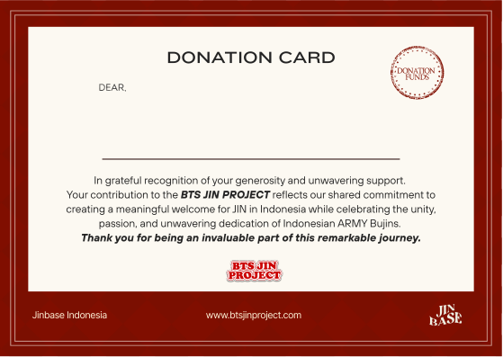

JINBASE Indonesia
with all our heart,
Thank You
to every one of you who made this possible
BTS JIN PROJECT
Find Your Appreciation Certificate
as BTS JIN PROJECT Contributors
with all our heart,
to every one of you who made this possible
BTS JIN PROJECT
Find Your Appreciation Certificate
as BTS JIN PROJECT Contributors
Looking for your email...
Hang tight, searching BTS JIN PROJECT records
Maaf, email yang kamu masukkan belum terdaftar
sebagai kontributor BTS JIN PROJECT.
Pastikan penulisan email sudah sesuai saat donasi, atau hubungi admin JINBASE jika ada kekeliruan.
Your certificate is ready
